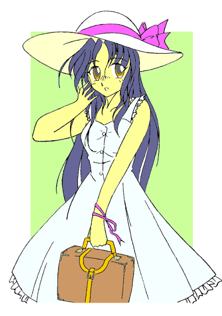

—— 華代ちゃんシリーズ ——
「こみパラ」
作：ぴろ
※「華代ちゃん」シリーズの詳細については、以下の公式ページを参照して下さい。
http://www.geocities.co.jp/Playtown/7073/kayo_chan00.html
こんにちは、初めまして。私は真城華代と申します。
最近は本当に心の寂しい人ばかり。そんな皆さんの為に私は活動しています。まだまだ未熟ですけれども、たまたま私が通りかかりましたとき、お悩みなどございましたら是非ともお申しつけ下さい。私に出来る範囲で依頼人の方のお悩みを露散させてご覧に入れましょう。どうぞお気軽にお申しつけ下さいませ。
報酬ですか？ いえ。お金は頂いておりません。お客様が満足頂ければ、それが何よりの報酬でございます。
さて、今回のお客様は——
それは八月半ばの暑い日曜日、都内臨海地区の見本市会場でのこと。
「ひゃあ〜っ、すごい行列だぁ……」
相原 翔（あいはら しょう）は目当ての売り場に辿り着くと仰天した。そこに並んだ行列は館の外に伸びていて、しかも全長数百メートルある館の端から端を往復していたのだった。
「はあ……始発でもダメなのかなぁ…………」
翔は都内郊外に住む高校生。アニメやマンガ、ゲームが好きな、いわゆる「オタク」である。
もっとも世間が紋切り型に考えているような、太っている不潔な感じのオタク男ではなく、どちらかというと線の細い、カワイイ系の少年だ。
今、彼は同人誌即売会の「こみっくパラダイス」——通称「こみパラ」に来ていた。
一番の目当ては、某恋愛シミュレーションゲームの原画家の同人サークルだ。ゲームをやっててその絵を一発で気にいってしまった翔は、どうしてもその原画家の同人誌が欲しくて、わざわざ始発電車を使って会場まで来たのである。
しかし、「こみパラ」は参加者の人数が一日に１５万人超とハンパではなく、翔が会場に入れたのは入場開始から３０分以上も経ってからだった。
さらにお目当てのそのサークルは、開催三日間の合計で３５０００にも及ぶ参加サークルの中で最も人気があると言っても過言ではない超大手であったため、ようやくそこに辿り着いた時には既にこのありさまだったのだ。
既に並んでいる参加者の多くは、サークル参加で入場した者、もしくは一般入場ではあるが徹夜して並んでいた連中である。後者は明らかなルール違反であり、前者もサークル入場そのものはともかく、一般入場の開場前に他の売り場に並ぶという行為は、やはりルール違反である。
翔は正直にルールを守って始発電車で来場したのだが、その結果がこれなので納得のいかない気分だった。
「仕方ないか。……僕も急いで並ばないと」
翔は気を取り直して、その列に並ぶために館の外に出ようとした。
しかし館の出入り口は混乱防止のため数が制限されており、開いている所まで行かなければならない。
すでに館内は参加者で大混雑していたため、なかなか出入り口まで辿り着けなかった。
ふと見ると、自販機設置所への入り口が目に入った。
（確かあそこからなら向こう側に抜けられたよな…………よしっ！）
何度か「こみパラ」に来たことのある彼は、自販機設置所に入り口が二ヵ所あり、そこから混雑を避けてショートカットできることを知っていたのだ。
ドンッ——。
「きゃっ！」「……わっ！」
設置所の入り口に飛び込んだ翔は、中にいた小さな女の子ともろにぶつかってしまった。
「あっ、ご、ごめんね。……大丈夫？」
翔はあわててそう謝ると、尻餅をついた彼女に手を差し伸べた。
「見たところ小学生っぽいけど……親か誰かの付き添い？」
「子供扱いしないでくださいっ。一人で来たんですっ」
確かに、そこには二人の他には誰もいなかった。
「ははは、ごめんね……でも、気をつけた方がいいよ。ここにはいろんな人が来ているからね」
「だいじょーぶですっ！ ほらこれっ」
女の子はそう言ってポシェットから名刺を取り出し、翔に差し出した。
そこには、
—— ココロとカラダの悩み、お受けします 真城 華代 ——
……と、書いてあった。
「見ての通り、あたしはセールスレディなの」
「セールスレディ……ねえ…………」
急いでいたはずなのに、その女の子と話しているうちに、あれだけ混んでいるんだから、少しくらい遅くなってもそうたいして変わらないだろう——と思えてきた。
翔は彼女と話し続けた。それがどのような事態をもたらすかも知らずに……
「へ〜っ、そんなすごい行列なんだ〜」
「うん、これから並んでも最低二時間はかかるかな……」
「大変なんだね、こんな炎天下なのに」
「全く…………ホント、女の子がうらやましいよ」
「えっ？ どうして？」
そのとき華代の表情がぱっと明るくなったことに、翔は気付かなかった。
「そこはね……女性専用の売り場があるんだよ」
先程売り場に行ったとき、列に並んでいなかった女の子がその長蛇の列を尻目にそこの本を買っていっていたの目にしていた。
別に横入りしたわけではない。そのサークルでは、一般の売り場のほかに女性専用の売場を設けていたのだ。
長蛇の列ができる大手の中にはごく稀に、体力の少ない女の子を炎天下に並ばせることへの引け目と、買い手のほとんどが男性であるため女性を優遇しても待ち時間に大きな影響が出ないことから、女性専用の売り場を設けるサークルがある。
そして、翔の目当てだったサークルもその一つだった。
「……だから女の子は、あんまり並ばないで買えるんだよ」
「なあんだ、だったら簡単ねっ」
「えっ？ 簡単……って？」
「大丈夫だよお兄ちゃん。あたしに任せて…………あれっ？」
彼女は床に落ちているカードを見つけて拾い上げた。それは清楚な雰囲気の美少女のイラストが描かれているテレホンカードだった。
「あ、ごめん……それ僕のだ」
「可愛い女の子の絵だね」
「うん、僕が一番好きなゲームキャラクターなんだ。人気もすごいからテレカにまでなってるんだよ」
「じゃあ、『この子』でいいよねっ」
「えっ？」
「……そーれっ！！」
女の子の掛け声とともに、翔は身体を上から下に何かが通り抜けていくような感じをおぼえた。
次の瞬間、急に視界が低くなった。
「……えっ？」
翔が驚いて自分の身体を見下ろすと、自分の身体が小さく華奢に変化していく光景が視界に飛び込んできた。
着ていた服がだぶだぶになってしまう。その直後、いきなり胸がムクムクと膨らみ始め、サイズの合わなくなった服の胸元を押し上げた。
「わわわっ？ む、胸が……っ！？」
それはあっという間に大きく膨らむと、柔らかくて豊かな乳房を形成した。
続いてウエストがキュキュッと括れ、それに相反するかのようにヒップが膨らむ。
腰全体が持ち上がり、脚が内股になっていく。
それと同時に身体全体が皮下脂肪に包まれて柔らかくなり、肌が白くきめ細かになる。
身体のラインが丸みを帯びて、肩幅が狭くなり、そして撫で肩になる。
「う、うわあああっ！ な……なんだこれえええっ！？」
翔は思わず悲鳴を上げた。その声は高く澄んだ可愛らしい声に変わっていた。
喉にある男性特有の出っ張りはすでに消えていた。
自分の声に驚いて、思わず口元に手を伸ばす。手に触れた唇はふっくらしていた。
唇だけではない。頭全体が小ぶりになるとともに顔の輪郭が変化し……目、眉、鼻などといった他の顔のパーツも優しげで可愛らしいもの——美しい少女の顔立ちに変わっていく。
短かった髪の毛が、艶々に輝くサラサラの黒髪になって爆発的に伸び、腰まで達した。
唇に触れていた指、そして腕までも細くてしなやかになる。両脚も、スラリと細長い綺麗なものに変わっていく……
「ま……まさか……っ！？」
細くなった手を下腹部に伸ばすと、その手に触れる「突起」がだんだん小さくなっていくのが感じられた。
そしてついには消えてなくなり、手の触れた下腹部の感触はぺったんこになった。
「そ、そんなぁ……ボク…………」
可愛らしい声で呟く翔に、男としての面影は全くなかった。
だぶだぶの男物の服を着た美少女が、そこにいた。
今度は服が変化を始めた。
穿いていた紺色のジーパンの二本の脚がするすると短くなり、一本に繋がる。生地は柔らかいものに変わりながら白く染まり、それは綺麗なスカートに変わった。
さらにそのスカートは上半身に伸びて胴体を覆い、ゆったりとした清楚なノースリーブのワンピースになった。
「ひゃ……っ、ふ、服まで……？ …………きゃああっ！！」
胸をぎゅっと締め付けられた。
ワンピースの下になったＴシャツがだんだんと小さくきつくなり、ブラジャーに変わったのだ。
トランクスもショーツになって、翔の下腹部にぴったりとフィットした。
そして暑さ対策に被っていたキャップはワンピースに合ったつば広の白い帽子に変わり、履いていたスニーカーは女性物のローファーになった。
足下に置いてあったデイパックも、いつの間にか女物の手提げ鞄に変わっていた……
「よし、できたっ♪」
「…………はっ！ ちょ、ちょっと華代ちゃん！ ボクに一体何をしたの！？」
翔は甲高くなった声で、目の前の女の子に問いかけた。
しかし、彼女はニコニコしたまま、
「お兄ちゃん……じゃなかったお姉ちゃん。その姿なら欲しいって言ってた本も簡単に買いに行けるよっ。
よかったね。……じゃあねっ！」
……と、言い残すと、自販機設置所を出ていった。
「か、華代ちゃん！ ……ちょっと待って！！」
翔もあわててそこからとび出したが、彼女の姿は大混雑した館内のどこかに消えてしまっていた……
（本当に買えちゃった……）
手には、お目当てだった超大手サークルの同人誌がある。
女性専用売り場に行ってみると、どこからどう見ても完璧な女の子である翔は、あっさり本を買うことができた。
翔はそれからチェックしてあったサークルの売り場を見て回りながら、先程の女の子——華代の姿を捜した。
もっともこの広い会場の、しかも大勢の参加者の中からたった一人の人間を捜し出すことなど、ほとんど不可能に近いのだが……
そして何軒目かのサークルを回ったとき、翔はふとあることに気づいた。
（なんか、視線を感じる……）
周囲を見渡すと、男女問わず多くの人が、四方から翔のことを見つめている。本を買うときも、売り子の視線が翔を見るなり「釘付け」になるのが見てとれた。
（やっぱりボク、変に見えるのかな…………うう、女装しているみたいで恥ずかしい……）
そう思って、恥ずかしそうにそそくさとその場をあとにする。
しかし、彼らは翔を興味本位で見ていたというわけではなかった。第一、ここにはコスプレで女装している男など掃いて捨てるほどいる。
女装なんぞ、ここでは珍しくも何ともないのだ。
むしろ翔が去った後に、彼らはこんなことを話していた。
「めちゃくちゃ可愛いコだったなぁ……」
「アイドル並だよ……」
「すごく綺麗……モデルの人かしら……？」
「初々しいところが萌え〜っ」
つまり、彼らは翔のことを「魅力的な女の子」として見惚れていたのだ。
だが……翔のことを見て、こんな会話をしていた者も少なくなかった。
「今のコの格好、どっかで見たことない？」
「うーん、たぶん…………のコスプレじゃないの？」
「ああそれそれ、すっげえそっくりだったよな……」
連中がこんな会話をしていたことを、翔は知るよしもなかった。
「ふぅ……、あとは企業ブースですね……」
ひと通りの売り場を回り終えた翔は、そう呟きながら館の外に出た。
企業ブースとは、同人サークルの他に「こみパラ」に参加している、様々な企業やメーカーが出店しているコーナーのことである。
ただ、そこは他の売り場から離れているため、結構な距離を歩かなくてはならない。
翔は途中にある大きな広場にさしかかった。そこにはコスプレイヤーのための特設スペース、通称「コスプレ広場」がある。
原則としてこの場所以外でのコスプレ撮影は禁止されているため、ここはコスプレイヤーたちと、彼等を撮影しようとするカメラ小僧や見物している観衆とでごった返していた。
（わぁ、相変わらずすごいです……）
様々な色とりどりのコスプレ衣装を身に纏ったコスプレイヤーたちに圧倒されながらも、その横を通り抜けようとした翔だったが……
「沙耶ちゃんっ」
翔の耳にそんな声が聞こえてきた。
「……ねえ、沙耶ちゃんてばっ」
とんとん、と肩を叩かれる。
「きゃっ！ ……えっ？ わ、わたしのことだったのですか……？」
ビクッとして振り向くと、そこには高級そうなカメラを持った青年が立っていた。
「おっ、声もそっくりなんだねっ」
「えっ？」
「ああ、ごめん。……写真を撮らせて欲しいんだけど、いいかな？」
青年は微笑みながらそう言った。
「しゃ、写真？ あの……どうしてわたしが……？」
「どうして……って、『城崎沙耶（きのさき さや）』ちゃんでしょ、そのコスプレ。……すごく似合ってるよっ」
「コ、コスプレ！？」
翔はあわてて鞄から手鏡（本人は気付いていないが、どうやら鞄の中身も変わっていたようだ）を取り出した。
「うそ……これが…………わたし？」
鏡に映っていたのは、テレカに描かれていた翔の一番お気に入りのゲームキャラクター、城崎沙耶の姿だった。

「似ている」なんてレベルではない。ぬけるような白い肌から顔立ちの整った優しげな容貌、ゆったりとしたワンピースでも隠しきれない抜群のプロポーションに至るまで、まさに「城崎沙耶が現実にいたらこうなります」というような、彼女そのものの容姿だった。
「わ、わたし、沙耶ちゃんになってしまったのですか…………って、えっ？」
『沙耶』に変わっていたのは容姿だけではなかった。その口から発している声はもちろんのこと、言葉遣いもいつの間にやら沙耶の慎ましげな口調になっていた。そのことにようやく気づいて翔は驚いた。
（で、でも変です。どうして……どうしてわたし、何の違和感もないのでしょう？ わたし……女言葉なのに…………）
自分が女言葉で考え、女言葉を口にすることに気づいても、なお何の違和感も持てないことに戸惑う。
しかし翔が違和感を持てないのは無理もなかった。なぜなら翔はそのとき既に、仕草や雰囲気、そして性格にいたるまで、『城崎沙耶』のキャラクター設定通りの女の子になってしまっていたからだ。
そう、翔自身は自覚していなかったが、会場を回っている間に、肉体のみならず内面まで『沙耶』そのものになってしまっていたのだ。
「じゃ、写真、撮らせてね」
「え……あ、は、はい…………」
沙耶の性格設定は、「慎ましげで優しく、人の頼みを断りきれない」というものである。
性格まで『沙耶』になってしまっている翔は、青年の申し出を断ることができなかった。恥ずかしがりながらもテレカに描かれた絵と同じポーズをとる。
「お、いいね〜っ。それじゃあ、撮りますよ」
カシャッ……カシャッ……カシャッ………… 「はい、ありがとうございました」
「い、いえ、どういたしまして……」
他にもいろいろなポーズの要求に応じながら、数枚の写真を撮られた。
ようやくその青年による撮影が終了して、翔はホッと一息つく。
ところが……
「「「沙耶ちゃん！ 写真撮らせてください！」」」
目敏いカメラ小僧が人気キャラクターの『沙耶』そのものの美少女を放っておく訳もなく、いつの間か翔の周囲には、黒山の人だかりができていた。
「きゃあっ！ な……なんなんですかこれはーっ」
さらに他のコスプレイヤーや見物していた観衆、騒ぎを聞きつけたやじ馬や「こみパラ」を取材に来ていた雑誌の記者までもが押し寄せてきた。
「めっちゃ可愛いー」
「すごーい、沙耶ちゃんそっくりー」
「衣装はご自分で作られたのですか？」
「沙耶ちゃーん、こっち向いてーっ」
「次号の『こみパラ』特集に載せたいんだけど……」
翔……いや、『沙耶』は次々に押し寄せる申し出を断ることができない。
もはや、収拾がつかなくなってしまう。
「いやーんっ、だ……誰か助けてくださーいっ！！」
今回の依頼も実に簡単でした。
女性専用の売り場に行けば早く買えるのだったら、女の子になっちゃうのが一番手っとり早いですからね。
あまりに簡単だったから、今回はサービスでお兄ちゃんが一番好きって言っていた女の子にしてあげました。
ところで、こういうアニメやゲームの好きなキャラクターになるのって「コスプレ」っていうんですよね。コスプレで大切なことはそのキャラクターになりきることだ……って前に聞いたことがあったから、お兄ちゃん……じゃなくてお姉ちゃんも中身まで全部その女の子にしてあげました。まわりからも大好評だったみたいだし、よかったよかった。
さて、何か困ったことがありましたら何なりとお申しつけ下さい。今度はあなたの街にお邪魔するかもしれません。
……それではまた。
□ 感想はこちらに □